Rather than using shallow additive architectures common to most statistical models, deep learning uses layers of semi-affine input transformations to provide a predictive rule.
Applying these layers of transformations leads to a set of attributes (or, features) to which probabilistic statistical methods can be applied.
Deep learning is one of the widely used machine learning method for analysis of large scale and high-dimensional data sets.
There are several deep learning architectures exist - each has its own uses and purposes. Convolutional Neural Networks (CNN) deal with 2-dimensional input objects, i.e. images and were shown to outperform any other techniques. Recurrent Neural Networks (RNN) were shown the best performance on speech and text analysis tasks.
Neural Network
Let \(f_1 , \ldots , f_L\) be given univariate activation functions for each of the \(L\) layers.
Activation functions are nonlinear transformations of weighted data.
A semi-affine activation rule is then defined by \[
f_l^{W,b} = f_l \left ( \sum_{j=1}^{N_l} W_{lj} X_j + b_l \right ) = f_l ( W_l X_l + b_l )\,,
\] which implicitly needs the specification of the number of hidden units \(N_l\). Our deep predictor, given the number of layers \(L\), then becomes the composite map
The fact that DL forms a universal “basis” which we recognize in this formulation dates to Poincare and Hilbert is central.
From a practical perspective, given a large enough data set of “test cases”, we can empirically learn an optimal predictor.
Similar to a classic basis decomposition, the deep approach uses univariate activation functions to decompose a high dimensional \(X\).
Let \(Z^{(l)}\) denote the \(l\)th layer, and so \(X = Z^{(0)}\). The final output \(Y\) can be numeric or categorical. The explicit structure of a deep prediction rule is then \[
\begin{aligned}
\hat{Y} (X) & = W^{(L)} Z^{(L)} + b^{(L)} \\
Z^{(1)} & = f^{(1)} \left ( W^{(0)} X + b^{(0)} \right ) \\
Z^{(2)} & = f^{(2)} \left ( W^{(1)} Z^{(1)} + b^{(1)} \right ) \\
\ldots & \\
Z^{(L)} & = f^{(L)} \left ( W^{(L-1)} Z^{(L-1)} + b^{(L-1)} \right )\,.
\end{aligned}
\]
Motivating Example
Apply feed-forward neural network with one hidden layer to a problem of binary classification
Code
numSamples =200# total number of observationsradius =10# radius of the outer circlenoise =0.0001# amount of noise to be added to the datad =matrix(0,ncol =3, nrow = numSamples); # matrix to store our generated data# Generate positive points inside the circle.for (i in1:(numSamples/2) ) { r =runif(1,0, radius *0.4); angle =runif(1,0, 2* pi); x = r *sin(angle); y = r *cos(angle); noiseX =runif(1,-radius, radius) * noise; noiseY =runif(1,-radius, radius) * noise; d[i,] =c(0,x,y)}# Generate negative points outside the circle.for (i in (numSamples/2+1):numSamples ) { r =runif(1,radius *0.8, radius); angle =runif(1,0, 2* pi); x = r *sin(angle); y = r *cos(angle); noiseX =runif(1,-radius, radius) * noise; noiseY =runif(1,-radius, radius) * noise; d[i,] =c(1,x,y)}colnames(d) =c("label", "x1", "x2")# Plot the training datasetplot(d[,2],d[,3], col=d[,1]+2, pch=16, xlab="x1", ylab="x2")
Let’s try to use a simple logistic regression model to separate the two classes.
Code
# Fit a logistic regression modelfit =glm(label~x1+x2, data=as.data.frame(d), family=binomial(link='logit'))# Plot the training datasetplot(d[,2],d[,3], col=d[,1]+2, pch=16, xlab="x1", ylab="x2")th = fit$coefficients# Plot the decision boundaryabline(-th[1]/th[3], -th[2]/th[3], col=2)
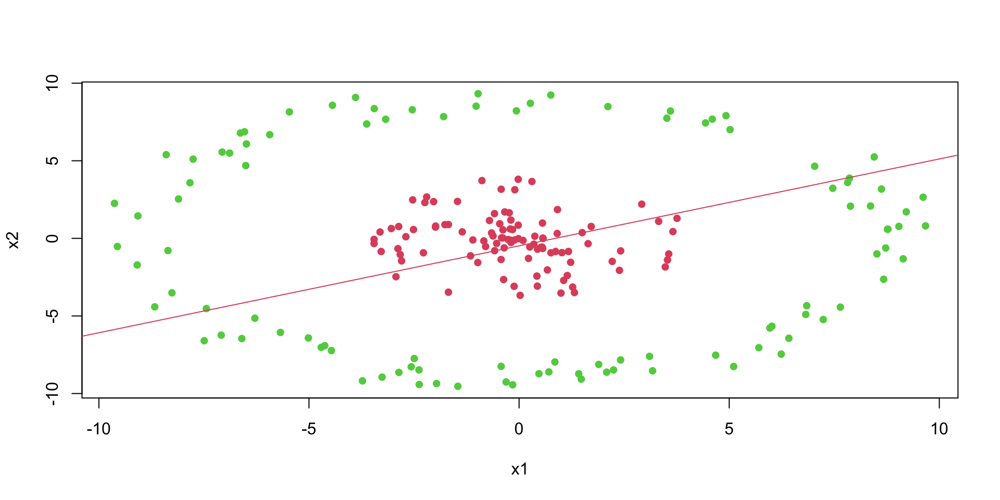
We can see that a logistic regression could not do it. It uses a single line to separate observations of two classes. We can see that the data is not linearly separable.
Circle Example
However, we can use multiple lines to separate the data.
Code
plot(x1~x2, data=d,col=d[,1]+2, pch=16)# Plot lines that separate once class (red) from another (green)lines(x1, -x1 -6); text(-4,-3,1)lines(x1, -x1 +6); text(4,3,2)lines(x1, x1 -6); text(4,-3,3)lines(x1, x1 +6); text(-3,4,4)
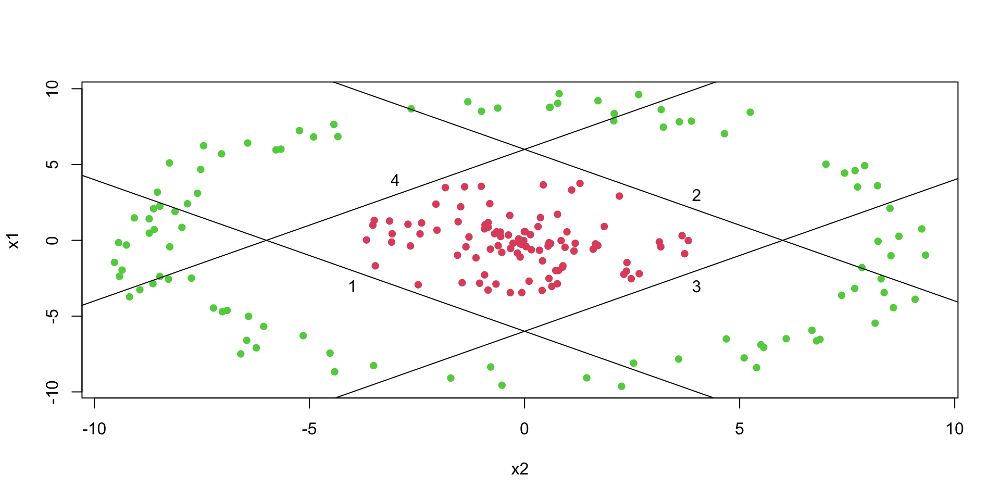
Circle Example
Now, we do the same thing as in simple logistic regression and apply logistic function to each of those lines
Using the matrix notaitons, we have \[
z = \sigma(Wx + b), ~ W = \begin{bmatrix} 1 & 1 \\ -1 & -1 \\ -1 & 1 \\ 1 & -1 \end{bmatrix}, ~ b = \begin{bmatrix} 6 \\ 6 \\ 6 \\ 6 \end{bmatrix}, ~ \sigma(z) = \frac{1}{1+e^{-z}}
\]
First layer of our NN: \(R^2 \rightarrow R^4\) output \(z\) called a feature vector.
Circle Example
The feature vector \(z\) is then passed to the output layer, which applies simple logistic regression to the feature vector. \[
\hat{y} = \sigma(w^Tz + b), ~ w = \begin{bmatrix} 1 \\ 1 \\ 1 \\ 1 \end{bmatrix}, ~ b = -3.1, ~ \sigma(z) = \frac{1}{1+e^{-z}}
\]
The output of the output layer is the probability of the positive class.
Code
# Calculate prediction (classification) using our neural networkpredict_prob =function(x){ x1 = x[1]; x2 = x[2] z =features(x1,x2)# print(z) mu =sum(z) -3.1# print(mu)sigmoid(mu)}
Circle Example
We can use our model to do the predictions now
Code
# Predict the probability of the positive class for a given pointpredict_prob(c(0,0))
[1] 0.7089128
Code
predict_prob(c(0,10))
[1] 0.2565405
Circle Example
The model generates sensible predictions, let’s plot the decision boundary to see how well it separates the data.
image(x1,x2,matrix(yhat,ncol =100), col =heat.colors(20,0.7))
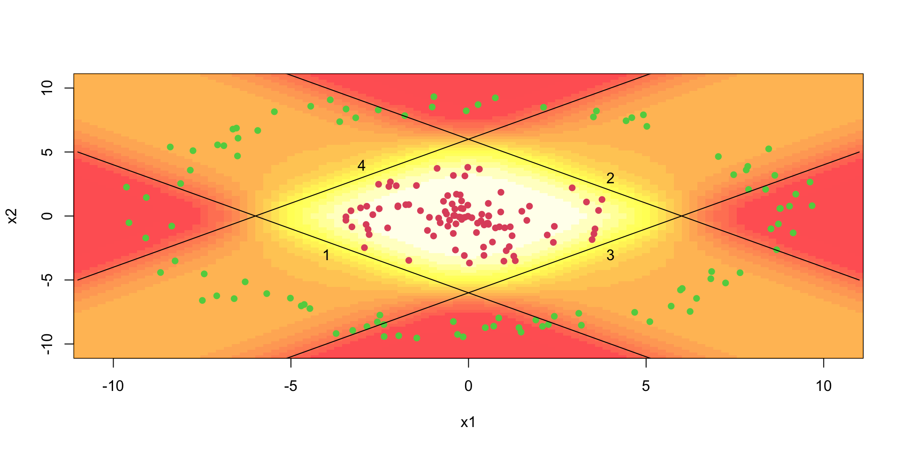
Regression
How about a regression model. We will use a one-layer neural network to fit a quadratic function. We simulate noisy data from the following model \[
y = 0.5 + 0.3x^2 + \epsilon, ~ \epsilon \sim N(0,0.02^2)
\] - 3 hidden units in the first hidden - 2 units in the second hidden layer - output layer is a single unit - Use the hyperbolic tangent (ReLU) activation function for all layers. The model is defined as follows
Noisy quadratic function approximated by a neural network with tanh activation function.
Notice that we did not have to explicitly specify that our model need to have a quadratic term, the model learned it from the data. This is the power of deep learning. The model is able to learn the structure of the data from the data itself.
Regression
We can apply the same approach to the interactions, say the true model for the data as follows \[
y = 0.5 + 0.1x_1 + 0.2x_2 + 0.5x_1x_2+ \epsilon, ~ \epsilon \sim N(0,0.02^2)
\] We can use the same model as above, but with two input variables. The model will learn the interaction term from the data.
The last output layer of a neural network has sigmoid activation function for binary output variable (classification) and no activation function for continuous output variable regression.
The hidden layers can have different activation functions. The most common activation functions are the hyperbolic tangent function and the rectified linear unit (ReLU) function.
A typical approach is to use the same activation function for all hidden layers. The hyperbolic tangent function is defined as \[
\tanh(z) = \frac{e^z - e^{-z}}{e^z + e^{-z}}
\] Notice, that the hyperbolic tangent function is a scaled version of the sigmoid function, with \(\tanh(0) = 0\). It is a smooth function which is differentiable everywhere. However,
Activation Functions
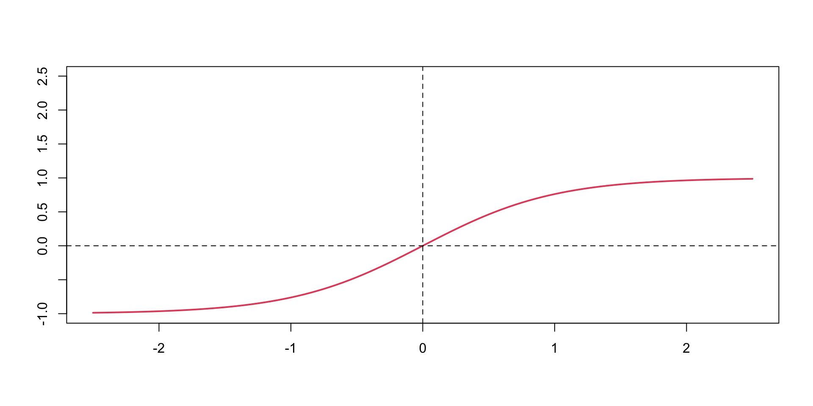
tanh
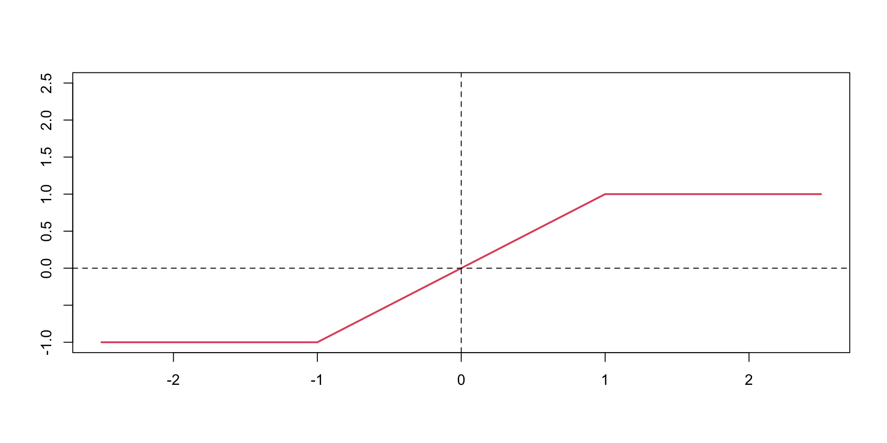
Hard tanh
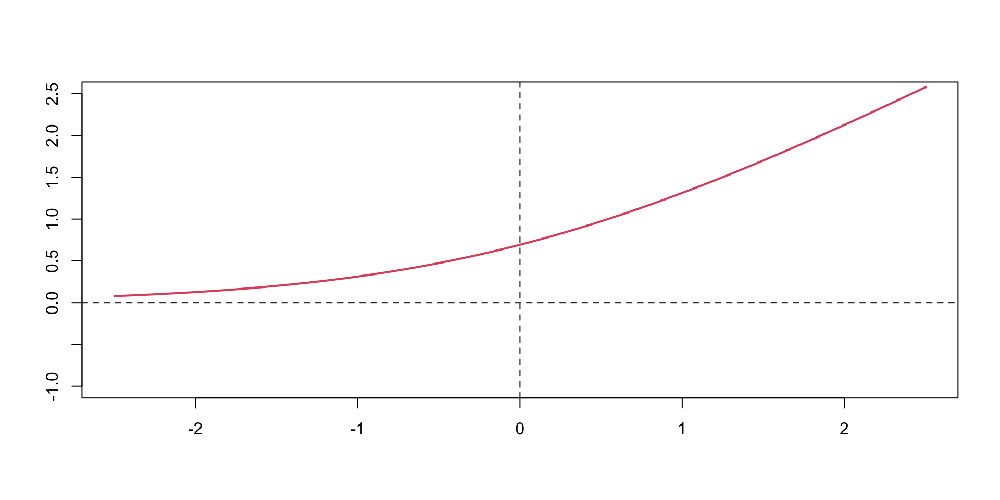
softplus
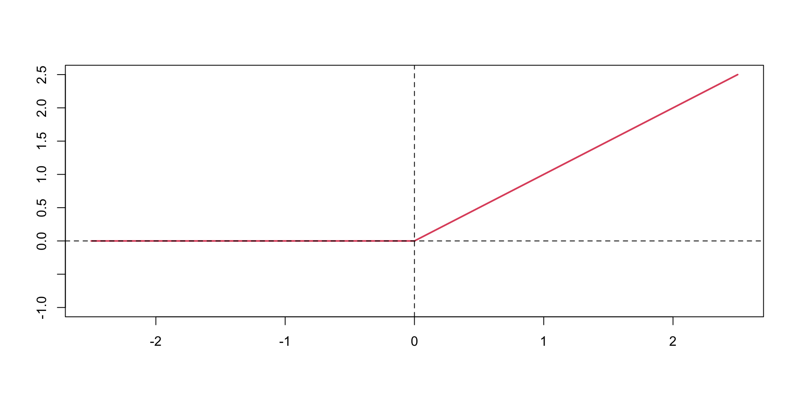
ReLU
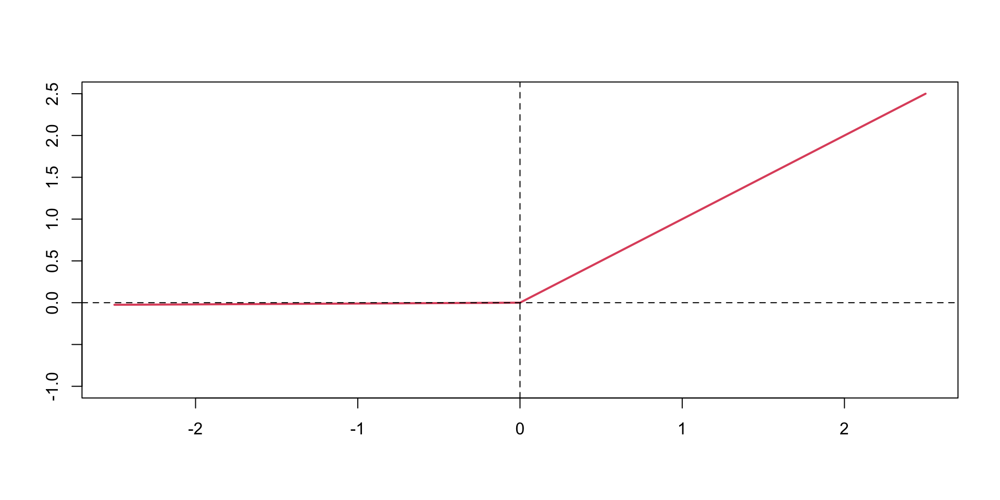
Leaky ReLU
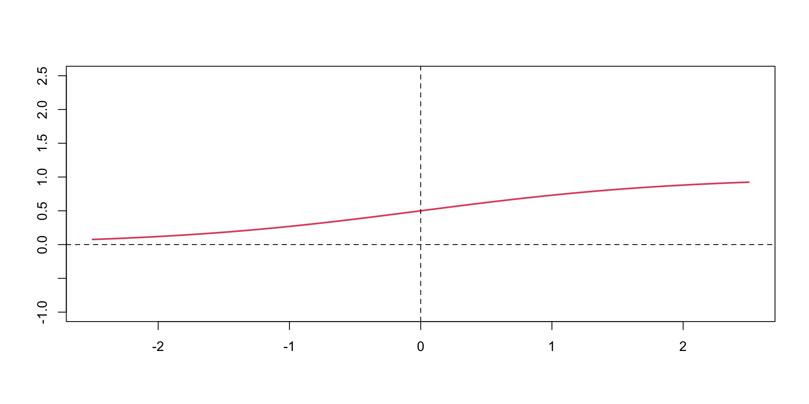
sigmoid
Activation Functions
Typically \(\tanh\) is preferred to the sigmoid function because it is zero-centered.
The major drawback of sigmoid and \(\tanh\) functions is that they saturate when the input is very large or very small.
When we try to learn the weights of the network, the optimisation algorithms makes small steps in the space of the parameters and when the weights are large the small changes won’t effect the values of the layers’ outputs and optimisation will “stagnate”.
This means that the gradient of the function is very small, which makes learning slow. The ReLU function is defined as
Activation Functions
The ReLU function is defined as \[
\text{ReLU}(z) = \max(0,z)
\] The ReLU function is a piecewise linear function which is computationally efficient and easy to optimize. The ReLU function is the most commonly used activation function in deep learning. The ReLU function is not differentiable at \(z=0\), but it is differentiable everywhere else. The derivative of the ReLU function is \[
\text{ReLU}'(z) = \begin{cases} 0 & \text{if } z < 0 \\ 1 & \text{if } z > 0 \end{cases}
\]
Quantile Linear Regression
Quantile regression is a statistical method that extends traditional linear regression
Models the relationship between predictor variables and specific quantiles of the response variable, rather than just the conditional mean.
Provides a more comprehensive view of the relationship between variables across different parts of the distribution.
Linear regression \[
E(Y|X) = X\beta
\]
vs quantile regression \[
Q_Y(\tau|X) = X\beta(\tau)
\] where \(\tau\) is the quantile of interest (0 < \(\tau\) < 1), and \(\beta(\tau)\) are the regression coefficients for the \(\tau\)th quantile.
What is a Quantile?
The distribution function (CDF) \[
F(y) = P(Y \leq y) = \tau
\] The \(\tau\)th quantile of \(Y\) is the value \(q\) such that \[
q = F^{-1}(\tau) = \inf \{y : F(y) \geq \tau\}
\]
Quantile loss
Sum of absolute differences between the predicted and actual values.
It is used for regression problems with continuous variables. \[
\min_{\beta}\sum_{i=1}^n |y_i - f(x_i,\beta)|
\] a.k.a. the quantile estimator with \(\tau=0.5\)
Quantile loss
Unconditional case: \[
\frac{\mathrm{d} \left | x \right | }{\mathrm{d} x} = \operatorname{sign} \left( x \right)
\] where \(\operatorname{sign} \left( x \right)\) is the sign function. Hence, deriving the sum above yields \[
\sum_{i=1}^n \operatorname{sign}(y_i - \beta).
\] This equals to zero only when the number of positive items equals the number of negative which happens when \(\beta\) is the median.
Quantile loss
A more rigorous and non-calculus proof is due to Schwertman (1990).
Let \(y_1,\ldots,y_n\) be the observed data and \(\hat{\beta}\) be the least absolute deviations estimator. Then we have \[
\sum_{i=1}^n |y_i - \hat{\beta}| \leq \sum_{i=1}^n |y_i - \beta|
\] for any \(\beta\). Let \(y_{(1)},\ldots,y_{(n)}\) be the ordered data. Then we have \[
\sum_{i=1}^n |y_i - \hat{\beta}| \leq \sum_{i=1}^n |y_i - y_{(i)}|
\] Let \(y_{(n/2)}\) be the median of the data. Then we have \[
\sum_{i=1}^n |y_i - \hat{\beta}| \leq \sum_{i=1}^n |y_i - y_{(n/2)}|
\] which implies that \(\hat{\beta}\) is the median of the data.
Quantile loss
The generalization of the median estimator to the case of estimating value of quantile \(\tau\) is as follows \[
\min_{\beta}\sum_{i=1}^n \rho_{\tau}(y_i - \beta)
\] where \(\rho_{\tau}(x) = x(\tau - \mathbb{I}(x < 0))\) is the quantile loss function. If we set \(\tau = 0.5\), the loss function becomes the absolute value function and we get the median estimator. The expected loss is \[
E \rho_{\tau}(y - \beta) = (\tau-1)\int_{-\infty}^{\beta} (y-\beta)dF(y) + \tau\int_{\beta}^{\infty} (y-\beta)dF(y)
\] Differentiating the expected loss function with respect to \(\beta\) and setting it to zero gives the quantile estimator \[
\hat{\beta}_{\tau} = F^{-1}(\tau)
\]
Bayesian Connection
Yu and Moyeed 2001
Turn loss function \[
\rho_{\tau}(x) = x(\tau - \mathbb{I}(x < 0))
\] into a likelihood function \[
f(x\mid \tau) \propto \exp\left(-\rho_{\tau}(x)\right)
\]asymmetric Laplace distribution!
Can add location \(\mu\) and scale \(\sigma\) parameters to the likelihood function \[
f(x\mid \tau) = \frac{\tau(1 - \tau)}{\sigma} \exp\left(-\rho_\tau\left(\frac{x-\mu}{\sigma}\right)\right)
\]
Estimation
Quantile regression estimates are obtained by minimizing the following objective function:
where \[\rho_\tau(u) = u(\tau - I(u < 0))\] is the tilted absolute value function.
Advantages and Applications
Robustness to outliers
Ability to capture heterogeneous effects across the distribution
No assumptions about the distribution of the error terms
Quantile regression is particularly useful in:
Economics: Analyzing income disparities
Ecology: Studying species distributions
Healthcare: Developing growth charts
Finance: Assessing risk measures like Value at Risk (VaR)[4]
Example in R
Let’s demonstrate quantile regression using the mtcars dataset in R:
Code
# Load required librarieslibrary(quantreg)library(ggplot2)# Load datadata(mtcars)# Fit quantile regression models for different quantilesquantiles <-c(0.1, 0.25, 0.5, 0.75, 0.9)models <-lapply(quantiles, function(q) rq(mpg ~ wt, data = mtcars, tau = q))# Create a plotggplot(mtcars, aes(x = wt, y = mpg)) +geom_point() +geom_abline(intercept =coef(lm(mpg ~ wt, data = mtcars))[1],slope =coef(lm(mpg ~ wt, data = mtcars))[2],color ="red", linetype ="dashed") +geom_abline(intercept =sapply(models, function(m) coef(m)[1]),slope =sapply(models, function(m) coef(m)[2]),color =c("blue", "green", "purple", "orange", "brown")) +labs(title ="Quantile Regression: MPG vs Weight",x ="Weight (1000 lbs)", y ="Miles per Gallon") +theme_minimal()
Code
# Print summary of median regressionsummary(models[[3]])
Call: rq(formula = mpg ~ wt, tau = q, data = mtcars)
tau: [1] 0.5
Coefficients:
coefficients lower bd upper bd
(Intercept) 34.23224 32.25029 39.74085
wt -4.53947 -6.47553 -4.16390
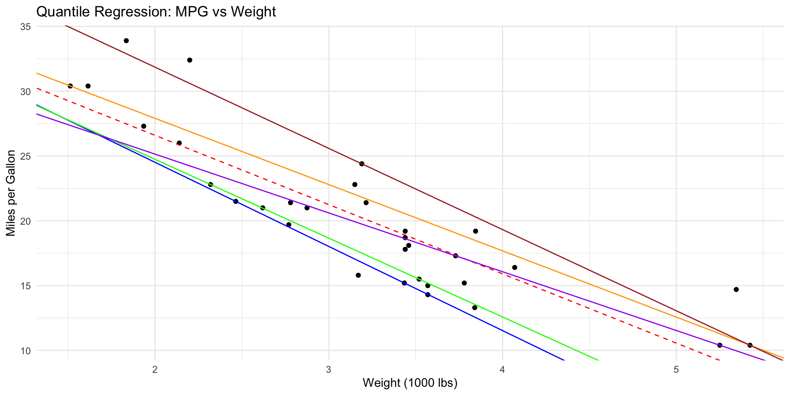
This code fits quantile regression models for the 10th, 25th, 50th, 75th, and 90th percentiles of miles per gallon (mpg) based on car weight. The resulting plot shows how the relationship between weight and fuel efficiency varies across different quantiles of the mpg distribution.
Quantile Neural Network for Synthetic Data
Code
import numpy as npimport torchimport matplotlib.pyplot as pltimport scipy.stats # Sinn =10000# x = np.linspace(-1,1, n)np.random.seed(8)x = np.random.uniform(-1,1,(n))x = np.sort(x)eps = np.random.normal(0,np.exp(1-x)/10)mu = np.sin(np.pi*x)/(np.pi*x)y = mu + epsdef truef(tau):return torch.sin(torch.pi*x)/(torch.pi*x) + torch.sqrt(torch.exp(1-x)/10)*scipy.stats.norm.ppf(tau)
Convert Data to PyTorch Tensors
Code
x = torch.as_tensor(x,dtype=torch.float32).view(-1,1)y = torch.as_tensor(y,dtype=torch.float32)plt.scatter(x,y,s=1)
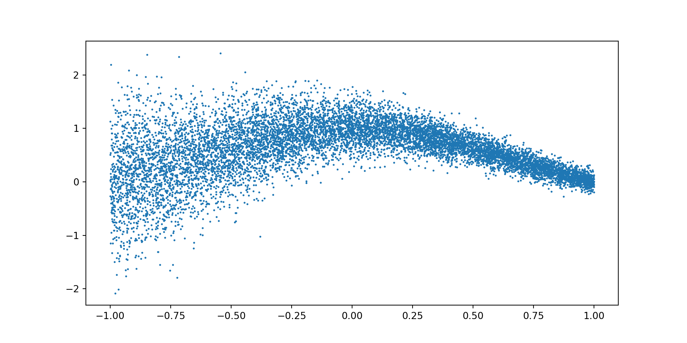
Define the Model
Code
import torch.nn as nnclass QuantNet(nn.Module):def__init__(self, xsz=1):super(QuantNet, self).__init__()self.nh =64 hsz =32 hsz1 =32self.fcx = nn.Linear(xsz, hsz)self.fctau = nn.Linear(self.nh, hsz)self.fcxtau = nn.Linear(hsz , hsz1)self.fcxtau1 = nn.Linear(hsz1 , hsz1)self.fc = nn.Linear(hsz1 , 2)def forward(self, x,tau): tau = torch.cos(torch.arange(start=0,end=self.nh)*torch.pi*tau) tau = torch.relu(self.fctau(tau)) # function phi from paper x = torch.relu(self.fcx(x)) # function psi x = torch.relu(self.fcxtau(x*tau)) # first layer of function g x = torch.relu(self.fcxtau1(x)) # second layer of function g x =self.fc(x) # third layer of function greturn x
Model Estimation (a.k.a. Training)
Code
def train(model, x,y,optimizer,epochs): lv = np.zeros(epochs)for t inrange(epochs): tau = torch.rand(1).item() f = model(x,tau) e = y.view(-1,1)-f loss =0.1*torch.mean(torch.square(e[:,0]))# loss = 0 loss += torch.mean(torch.maximum(tau*e[:,1],(tau-1)*e[:,1])) optimizer.zero_grad() loss.backward() optimizer.step() lv[t] = loss.item()if t %2000==0:print(f"Epoch {t}: Loss = {loss.item():>7f}")print(f"Epoch {t}: Loss = {loss.item():>7f}")return lv
class FixedQuantNet(nn.Module):def__init__(self, xsz=1, tau = [0.5]):super(FixedQuantNet, self).__init__()self.nh =64 hsz =64self.fcx = nn.Linear(xsz, hsz)self.tau = tauself.nq =len(self.tau)self.fc = nn.Linear(hsz , self.nq +1)def forward(self, x): x = torch.relu(self.fcx(x)) x =self.fc(x)return xdef train(self,x,y,optimizer,epochs): lv = np.zeros(epochs)for t inrange(epochs): f =self(x) e = y.view(-1,1)-f loss =0.1*torch.mean(torch.square(e[:,0]))# loss = 0for i inrange(self.nq): loss += torch.mean(torch.maximum(self.tau[i]*e[:,i+1],(self.tau[i]-1)*e[:,i+1])) optimizer.zero_grad() loss.backward() optimizer.step() lv[t] = loss.item()if t %2000==0:print(f"Epoch {t}: Loss = {loss.item():>7f}")print(f"Epoch {t}: Loss = {loss.item():>7f}")return lv
We consider the following model: \[\begin{align*}
\tau &\sim \mathrm{Gamma}(0.5, 0.5) \\
\lambda_d &\sim \mathrm{Gamma}(0.5, 0.5) \\
\beta_d &\sim \mathcal{N}(0, 20) \\
y_n &\sim \mathrm{Bernoulli}(\sigma((\tau \lambda \odot \beta)^T x_n))),
\end{align*}\] - \(\tau\) is a scalar global coefficient scale - \(\lambda\) is a vector of local scales - \(\beta\) is the vector of unscaled coefficients,
Code
import tensorflow_probability.substrates.jax as tfpimport numpy as npimport jax.numpy as jnptfd = tfp.distributionsimport jaximport matplotlib.pyplot as plt
Apply to Iris Data
Code
import pandas as pdiris = pd.read_csv("data/iris.csv")print(iris.shape)
Taking the logarithm of both sides, we get \[
\log \pi(z) = \log \pi(\theta) + \log \left| \frac{\partial T }{\partial z}(z) \right|
\] Use \(T(z)=e^z\), and \(\log|\frac{\partial T}{\partial z}(z)| = z\)
Change of Variables in Code
Code
def unconstrained_joint_log_prob(x, y, theta): ndims = x.shape[-1] unc_tau, unc_lamb, beta = jnp.split(theta, [1, 1+ ndims]) unc_tau = unc_tau.reshape([]) # Make unc_tau a scalar tau = jnp.exp(unc_tau) ldj = unc_tau lamb = jnp.exp(unc_lamb) ldj += unc_lamb.sum()return joint_log_prob(x, y, tau, lamb, beta) + ldj
Let’s check out function
Code
from functools import partialtarget_log_prob = partial(unconstrained_joint_log_prob, x, y)theta = np.r_[tau,lamb,beta]target_log_prob(theta)
Bayesian techniques are increasingly being used in the context of large language models (LLMs).
These developments highlight the growing synergy between Bayesian methods and large language models, offering improvements in model performance, uncertainty quantification, and interpretability.
Uncertainty Estimation: Bayesian Prompt Ensembles (BayesPE) have been proposed as a novel approach to obtain well-calibrated uncertainty estimates for black-box LLMs. This method uses a weighted ensemble of semantically equivalent prompts and applies Bayesian variational inference to estimate the weights.
Enhancing Bayesian Optimization: A new approach called LLAMBO integrates LLMs within Bayesian optimization frameworks. This method frames the optimization problem in natural language, allowing LLMs to propose and evaluate solutions based on historical data. LLAMBO has shown promise in improving surrogate modeling and candidate sampling, especially in early stages of search.
Some Applications of Bayes Approaches in LLMs
Probability Estimation: The BIRD framework incorporates abductive factors, LLM entailment, and learnable deductive Bayesian modeling to provide controllable and interpretable probability estimation for model decisions. This approach has demonstrated a 35% improvement over GPT-4 in aligning probability estimates with human judgments.
Natural Language Processing: Bayesian techniques have been applied to various NLP tasks, including word segmentation, syntax analysis, morphology, coreference resolution, and machine translation. These methods offer an elegant way to incorporate prior knowledge and manage uncertainty over parameters.
Deep Bayesian Learning: Researchers are exploring the integration of Bayesian principles with deep learning models for NLP applications. This includes the development of hierarchical Bayesian models, variational autoencoders, and (stochastic neural networks)[https://aclanthology.org/P19-4006/].